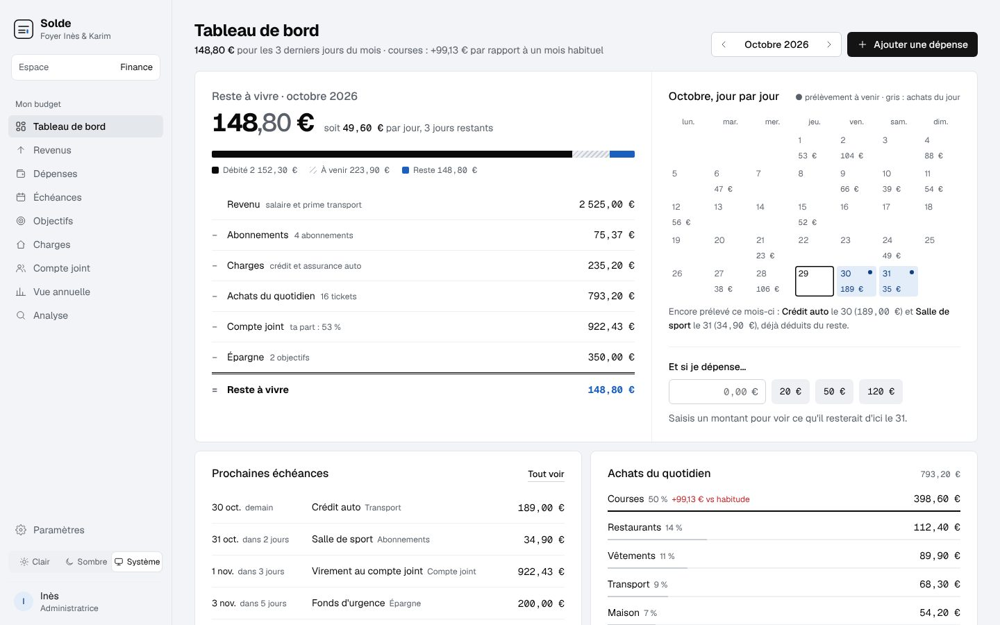
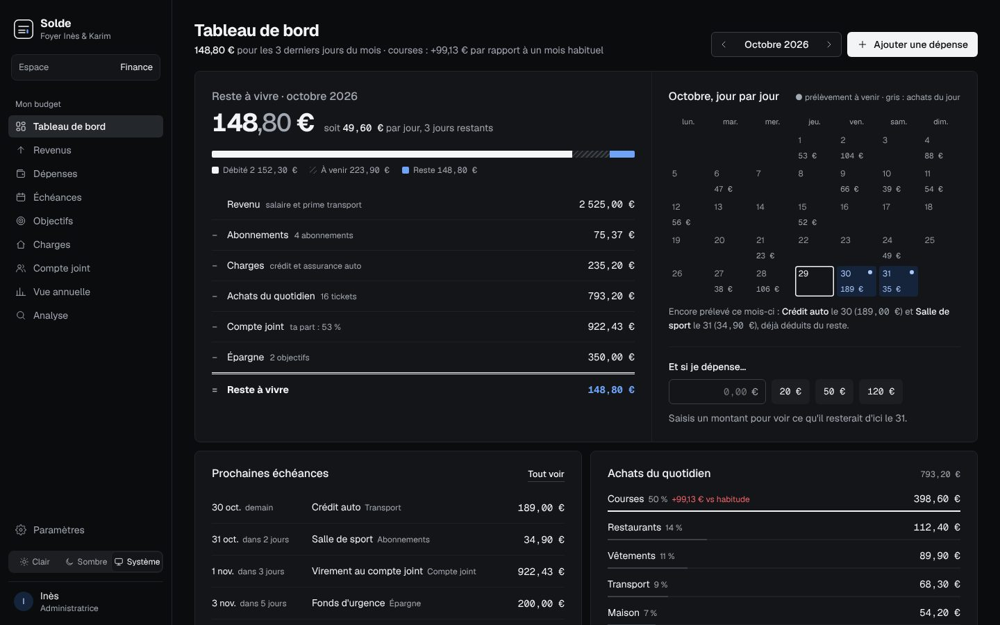
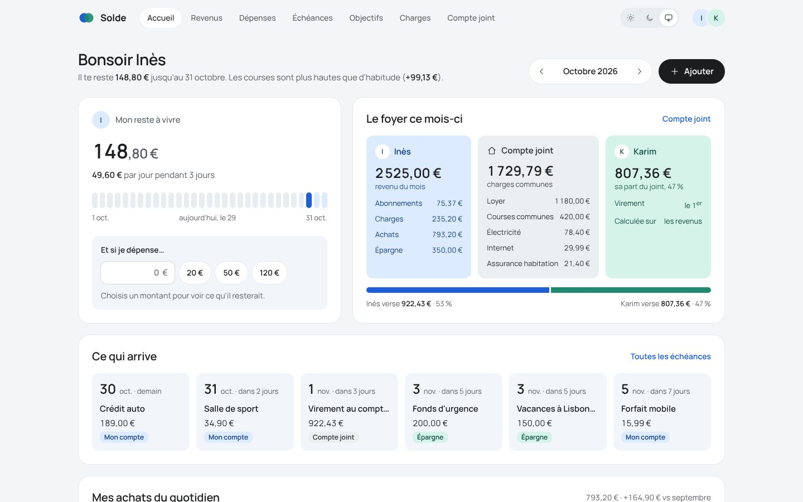
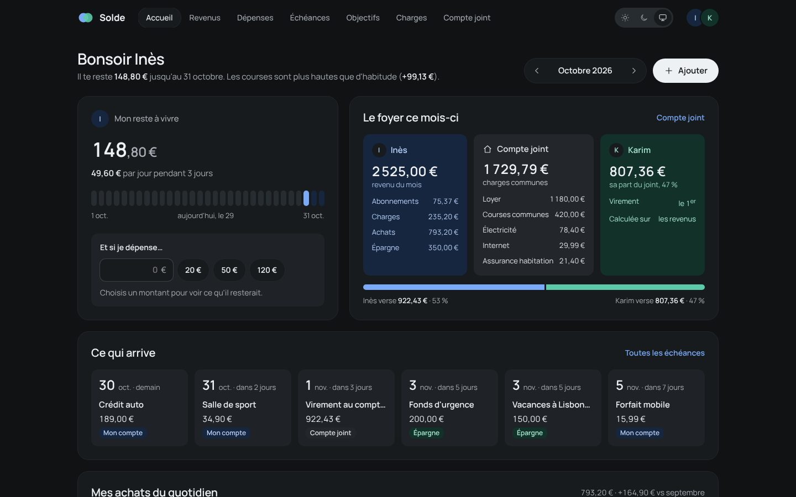
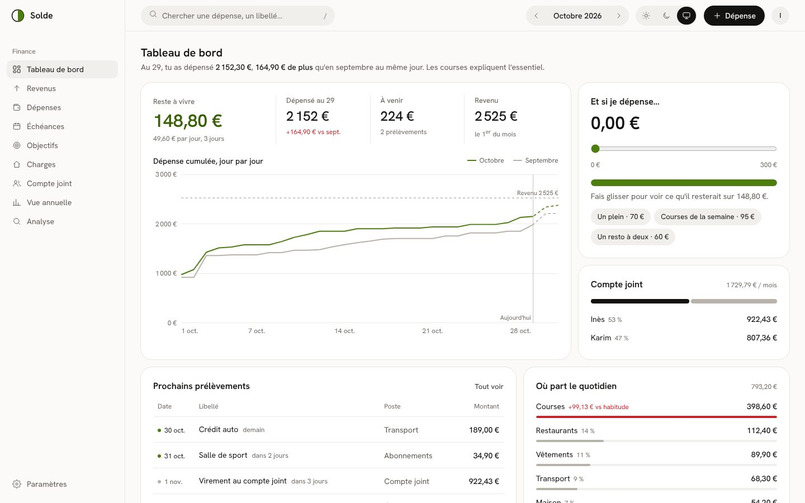
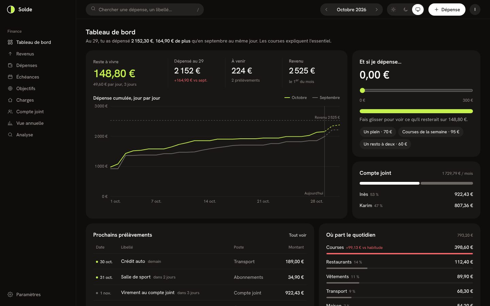

Le même tableau de bord, les mêmes chiffres d'octobre, trois partis pris. Chacune existe en clair, en sombre, et suit le système par défaut ; le choix est partagé entre les trois pages.


Le mois s'écrit comme une soustraction de livre de comptes : revenu, moins chaque poste, double trait, reste.


Un budget à deux : trois couloirs (Inès, le compte joint, Karim) et une teinte par personne.


Le coup d'œil du soir : la dépense cumulée jour après jour, face au mois dernier.